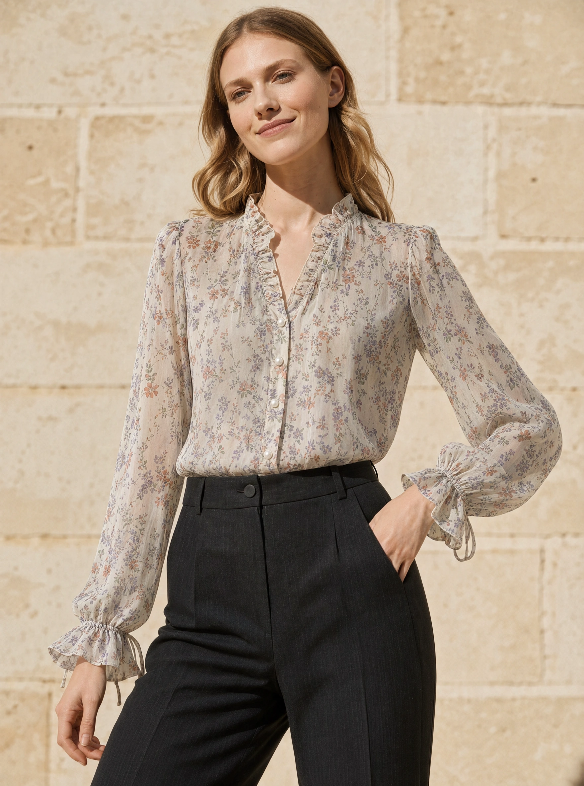
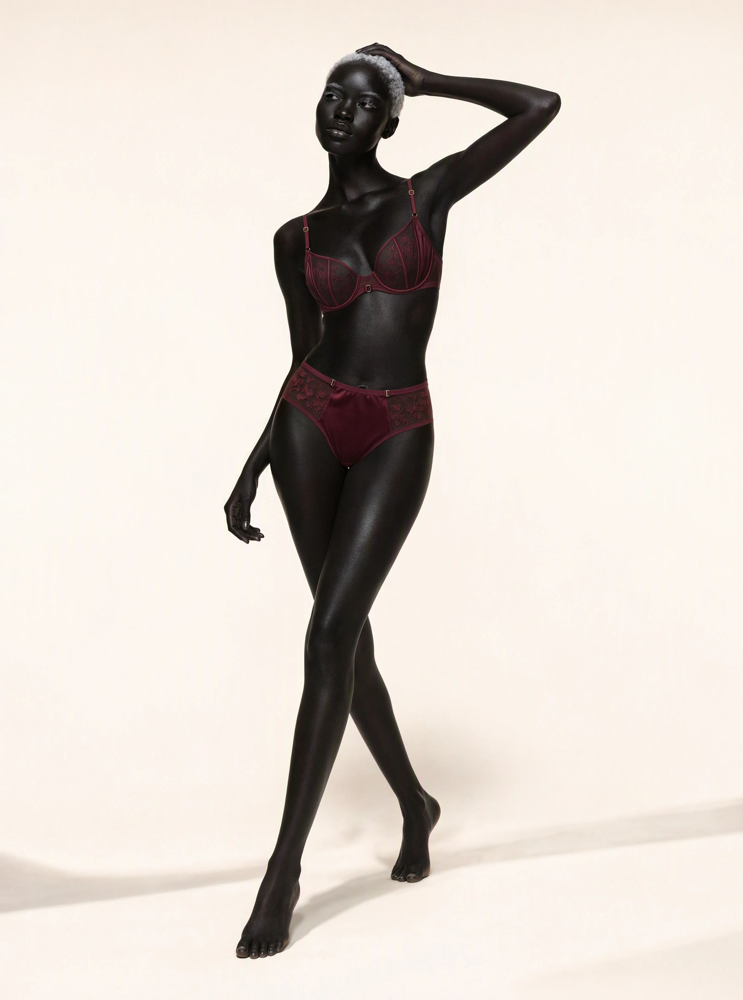
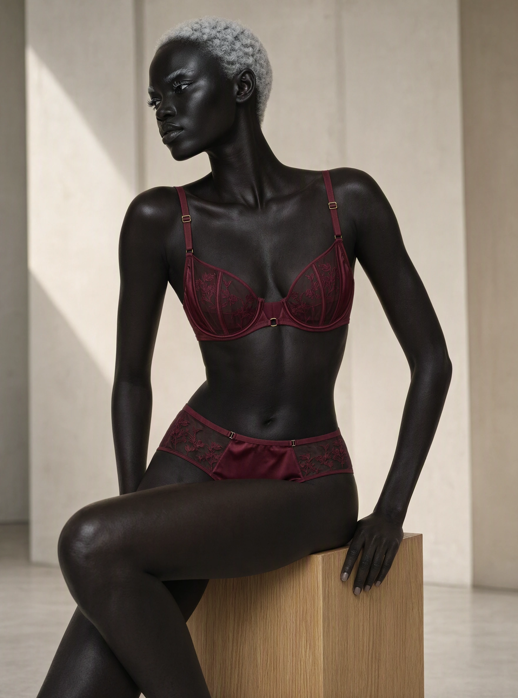
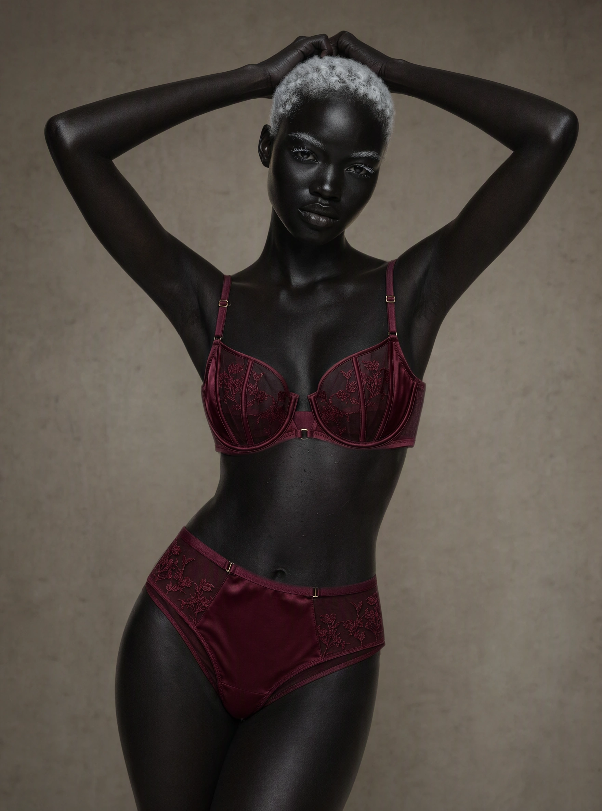
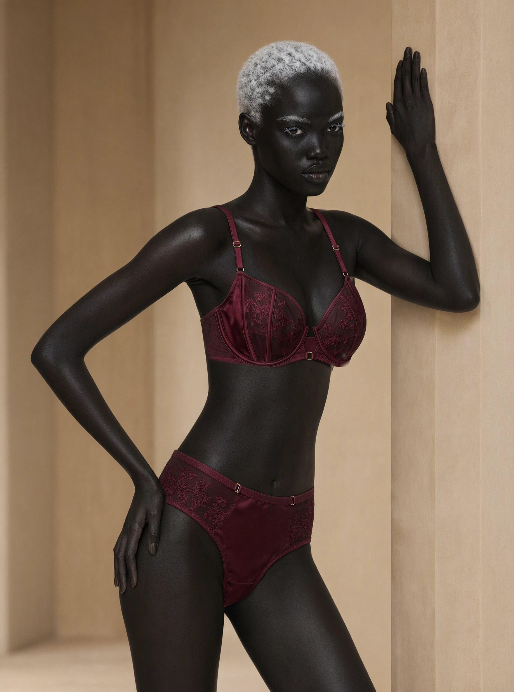

Floral chiffon / 1Fashion series / fabric, fit and a change of setting01 / 04
Virtual Try On
Garments in a new context, with their defining details in view.
27 selected imagesOriginal references included in every series
01
Floral chiffon
02 images
02
Burgundy lace
04 images


Burgundy lace / 1Fashion series / fabric, fit and a change of setting

Burgundy lace / 2Fashion series / fabric, fit and a change of setting

Burgundy lace / 3Fashion series / fabric, fit and a change of setting

Burgundy lace / 4Fashion series / fabric, fit and a change of setting03
Houndstooth coat
02 images


04
Technical sneakers
02 images


05
Embroidered mesh
02 images


06
Baroque satin
02 images


07
Striped pajamas
02 images


08
Patent ankle boots
02 images


09
Asymmetric sequins
02 images


10
Patchwork cargo
02 images


11
Outerwear
05 images


Next visual worldFood Design